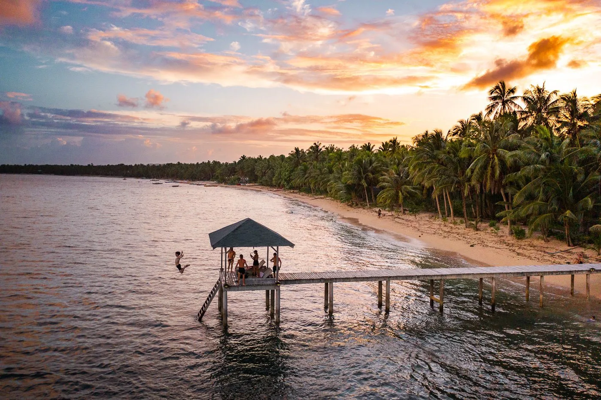

Mindanao is the second-largest island in the Philippines, after Luzon, and seventh-most populous island in the world. Located in the southern region of the archipelago, the island is part of an island group of the same name that also includes its adjacent islands, notably the Sulu Archipelago. According to the 2020 census, Mindanao has a population of 26,252,442 people, while the entire island group has an estimated population of 27,021,036 according to the 2021 census.
Mindanao encompasses the large island of Mindanao plus smaller islands in the southern Philippines. In its largest city, Davao, the Philippine Eagle Centre and Davao Crocodile Park showcase local wildlife. The urban People's Park features statues of indigenous people and the Durian Dome, named after the spiky, smelly fruit that grows in abundance on Mindanao. Southwest, the Mount Apo volcano has trails and a lake.
Dahilayan Adventure Park. Now referred to as "Dahilayan," this area is among the best in Bukidnon for family-friendly and entertaining activities. The 840-meter zip line is located here, along with additional amenities. It is one of the longest dual ziplines in the Philippines. See More.
Siargao, also referred as as the "Surfing Capitol of the Philippines," is largely to blame for popularizing surfing in the nation. Siargao is accessible for various sports outside surfing, like rock climbing and cave exploration. See More.
Camiguin Islands is well-known for its tourism attractions, including White Island, Mantigue Island, Mount Hibok-Hibok, and the recently recognized Sunken Cemetery and Bonbon Church Ruins as National Historic Sites. Camiguin Island retains its rural charm while being a popular tourist attraction. See More.
Mt. Apo is the highest point in the country, rising 3144 meters above sea level. Being the grandfather of all Philippine mountains, it is also every mountaineer's fantasy mountain in the country. See More.

Tinago Falls. The waterfall, which is 240 feet high, is a fantastic place for swimming and cliff diving. Bamboo rafts are made available for rent if you want the whole waterfall experience. If you decide to rent one, a local guide will take you close to the base of the falls so you may experience the cool water pouring on you or have a plunge. See More.